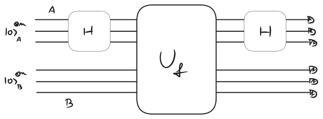

Consider the function:
where is not the null string, such that it presents a kind of periodicity:
Meaning that the inputs can be grouped into couples that share the same output.
Algorithm
If we find two inputs belonging to the same output class, it’s easy to find b, as we can just XOR sum them.
Classically, we need to do a random search on the inputs, which has complexity .
In the quantum case:

- We have two registers A and B, containing qubits each, initialized in
- Apply a global Hadamard gate on A
- Apply a Uf gate on A and B
- Apply a global Hadamard gate on A
- Measure everything
After the gate, the state reads:
The last Hadamard on A and the measurement on B commute.
We perform the measurement first, so if we label the output classes in B , for each we would have two states in A corresponding to the input associated to , i.e. . Before the measurement:
So when we perform a projective measurement onto , each output is equiprobable with probability .
After the measurement, on registry A:
We apply the Hadamard:
\frac{\ket{x_{f_j}}+\ket{x_{f_j}\oplus b}}{\sqrt{2}}\mapsto \frac{1}{\sqrt{2}}\frac{C}{\sqrt{N}}\sum _y (-1)^{x_{f_j}\cdot y}\left(1+(-1)^{b\cdot y}\right)\ket{y} $$where $C$ is a normalization constant (possibly $1$ but not sure and it's not important to the functioning of the algorithm). The only remaining states $y$ in the output of A are those orthogonal to $b$:y\cdot b =0
\left{\begin{array}{l}b\cdot y_1 =0\ b\cdot y_2 =0\ \vdots\ b\cdot y_k =0\end{array}\right.
Which k is enough to find $b$? It scales $\sim O(n)$.